16 Photos of 2016
Friday, January 20, 2017
A couple days ago, an email thread of photographers sharing their favorite 16 photos of 2016 caught my eye. I thought I'd try doing the same.
I only this year bought a camera and started taking photos. About a year ago, I tried out Roger's DSLR while on a trip to Portland, Seattle, and Vancouver. I liked using it, and I especially loved looking at the photos later. They brought back all the good memories of the trip.
Several months later, I copied his setup and started taking my own photos. The following were taken with a Nikon D750 with a 35mm lens. (Thanks, Roger!) The photos below are down-sized. You can see better versions on Google Photos.
May 20, 2016 | I like this picture of Sumukh after our CS Commencement at Zellerbach Hall. He's got a really great smile, and I was happy with how the lighting and blur worked out. This was actually one of the first 200 photos I took. I had just gotten the camera a couple days before and knew only the basics of shutter speed and aperture. I think I was just starting to understand ISO. Ironically, this is the only photo with a reasonable ISO setting. (I got too excited by how sensitive my camera was to low light and didn't understand the graininess tradeoff implications till much later.)
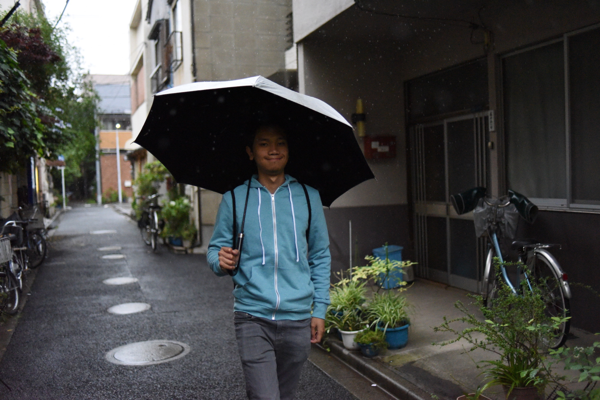
May 30, 2016 | This is an example of the aforementioned poor choice in high ISO. I still like the composition of this photo of Leo walking through a quiet residential area in Taito-ku, Tokyo. We had woken up really early to visit the popular Yasakuni Shrine before any other tourists. I like how the high shutter speed caught individual droplets of rain.
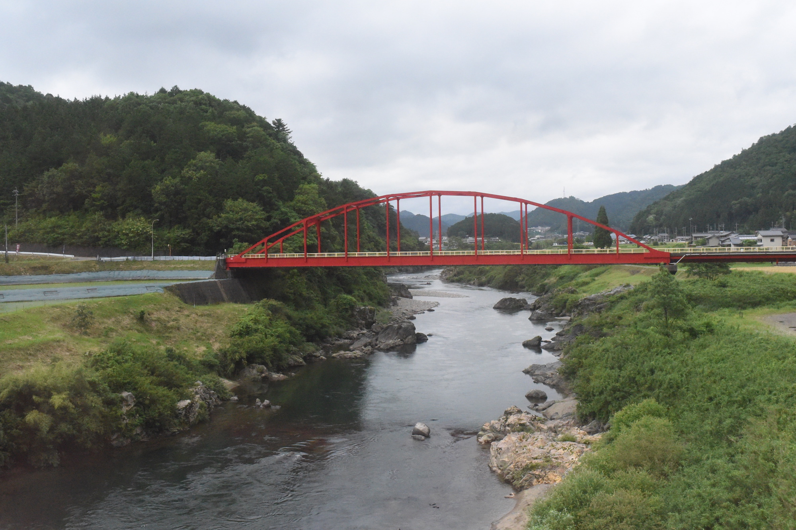
May 30, 2016 | Later that same day, our small group got on a series of trains (ranging from the high-speed Shinkansen bullet train to a one-car railway train) to travel from Tokyo to Gujo-Hachiman, Gifu Prefecture. If my memory serves me right, we passed this bright red bridge on the final leg of our journey (by railway train).
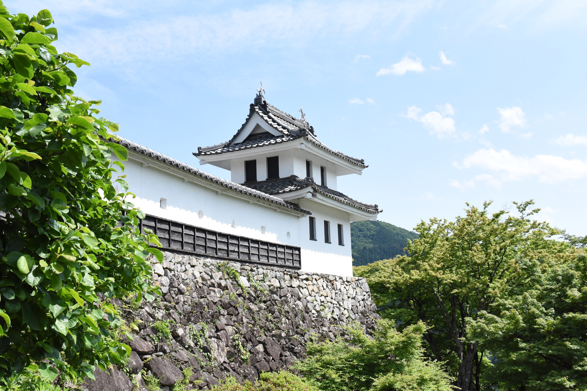
May 31, 2016 | In Gujo-Hachiman, a small rural town nestled between two merging rivers, we visited the Gujo-Hachiman Castle. The weather was perfect, and the scenery was lush and beautiful. This photo shows one of the guard towers of the castle.
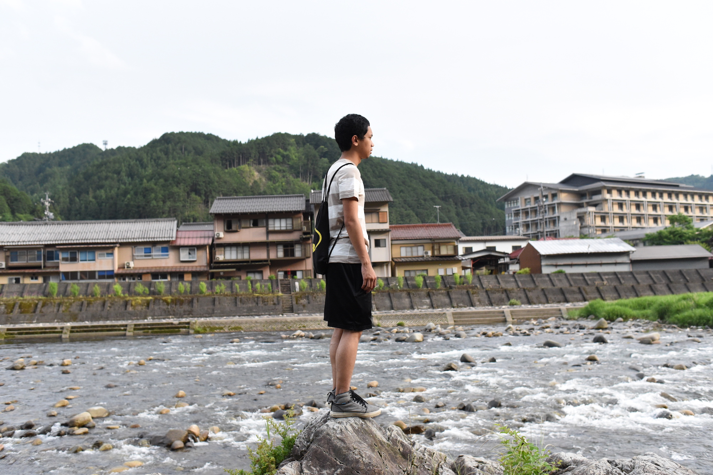
May 31, 2016 | During our too-short three night stay in Gujo-Hachiman, we spent a significant amount of time playing in and next to the rivers. Water appeared to be the life of the city. Clean river water flows through open gutters on the sides of the streets, and there are even spots to view koi fish swimming in gated sections of the gutters.
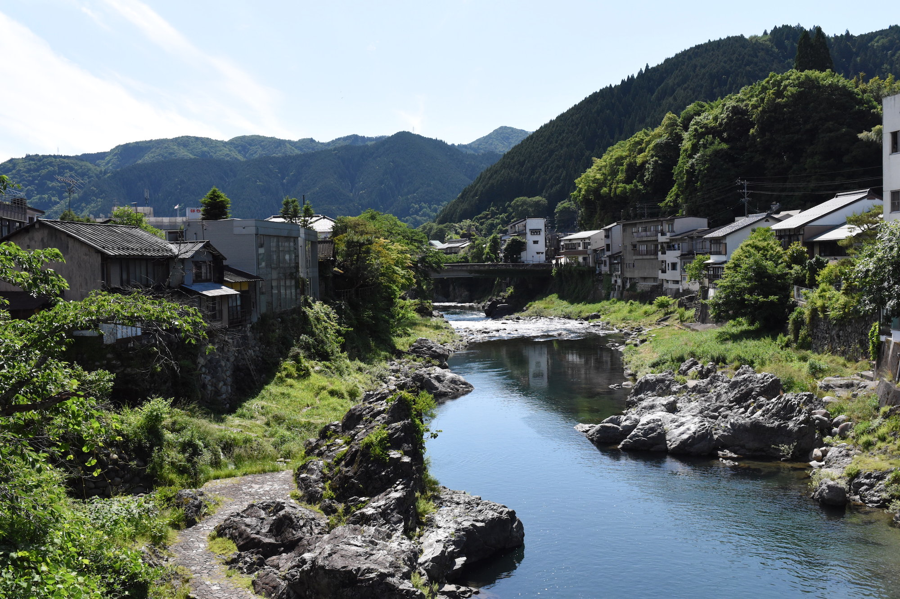
June 1, 2016 | I sincerely found Gujo-Hachiman to be the most beautiful place I have ever visited. I tried my best to capture the magic of the city and the beauty of the river, but I don't think these pictures do it justice.
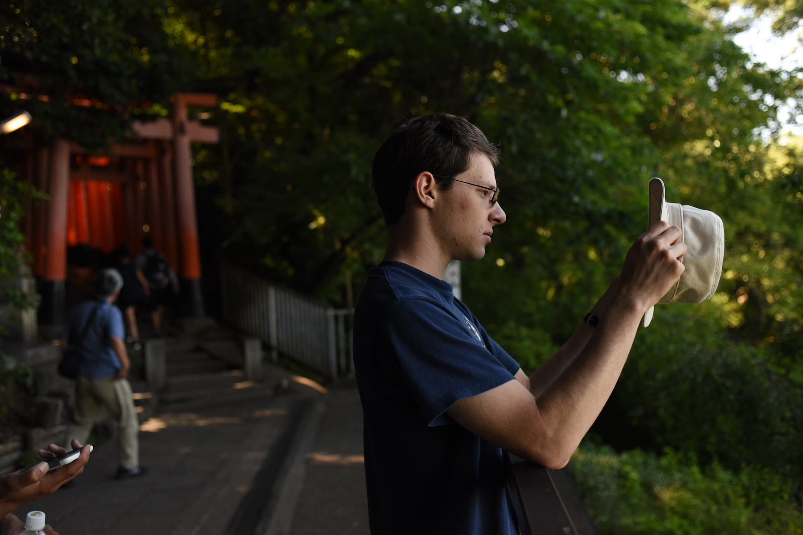
June 3, 2016 | I like this photo of Patrick examining his hat. I think the directionality of the light is interesting, and you can see red torii of Kyoto's iconic Fushimi Inari Shrine in the background.
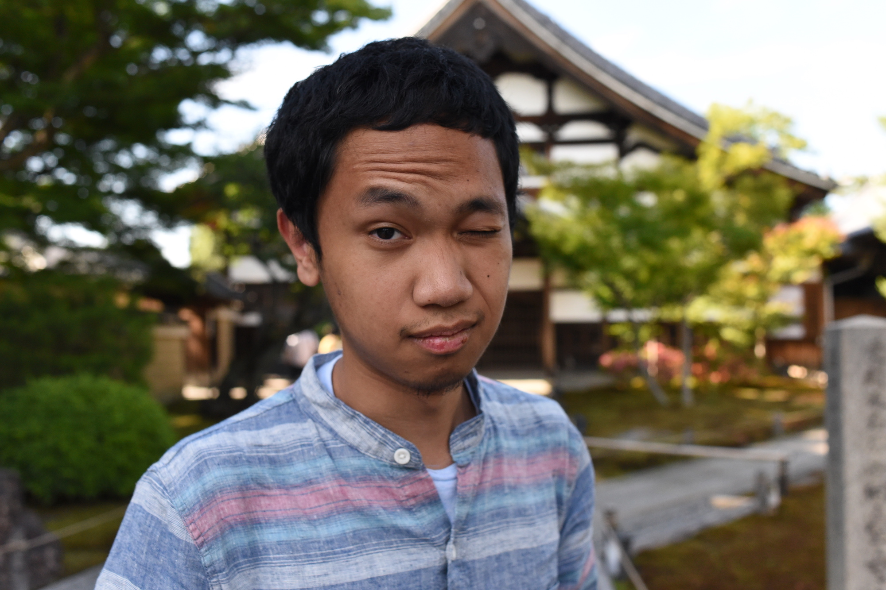
June 3, 2016 | I don't quite remember which part of Kyoto this photo was taken in, but I do like Leo's expression and the blurring of the background. Leo is very photogenic, and he was a good sport about me taking so many pictures of him.
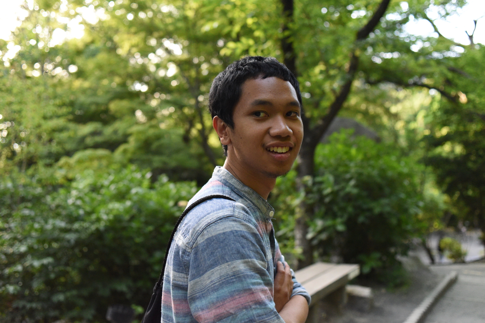
June 3, 2016 | Yet another photo of Leo. This was taken in the garden area of Kiyomizudera, a stunning Buddhist temple built into the side of a hill in Kyoto.
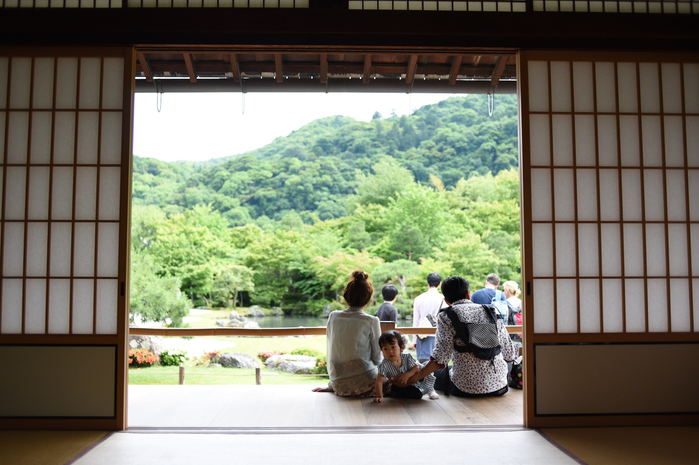
June 5, 2016 | Tenryu-ji Temple in Arashiyama, Kyoto, had some nice relaxation rooms from which you could view the garden. When a young family sat down in front of the doorway, I started taking pictures. I really liked this one of the baby girl turning around curiously -- eager to explore, but held in place by a protective hand.
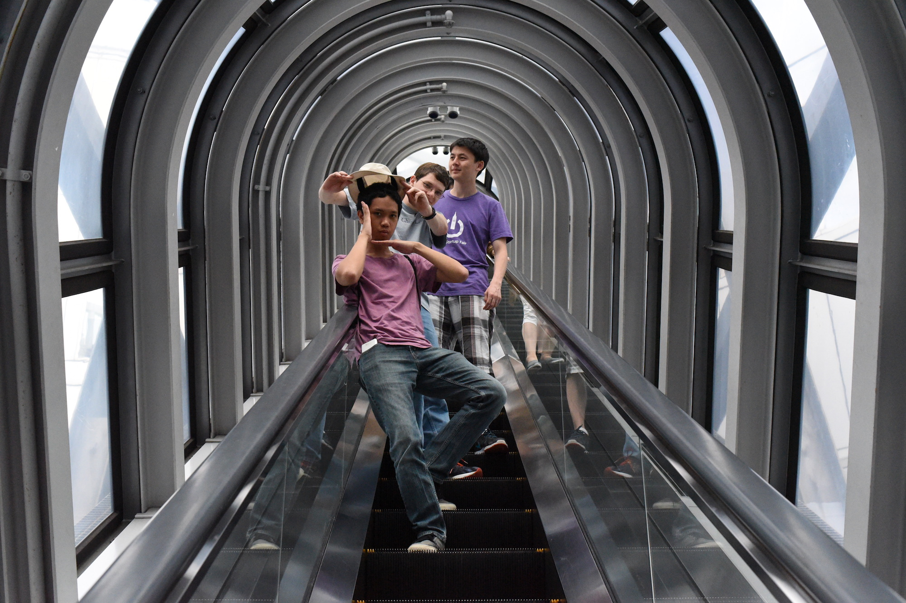
June 6, 2016 | The boys started posing as we went down the escalator of the Umeda Sky Building in Osaka. The tunnel-shaped escalator was suspended in the air between one half of the building and the observation deck. I like this photo for the patterns, the interesting perspective, and the posing.
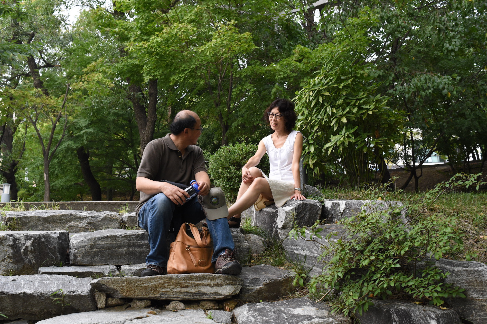
September 6, 2016 | This sweet moment between my parents was captured in a garden at the beautiful Ewha University in Seoul. Two of my aunts went to this prestigious university, the top women's college of Korea. The grounds had a fantastic mix of interesting modern architecture and landscaped gardens.
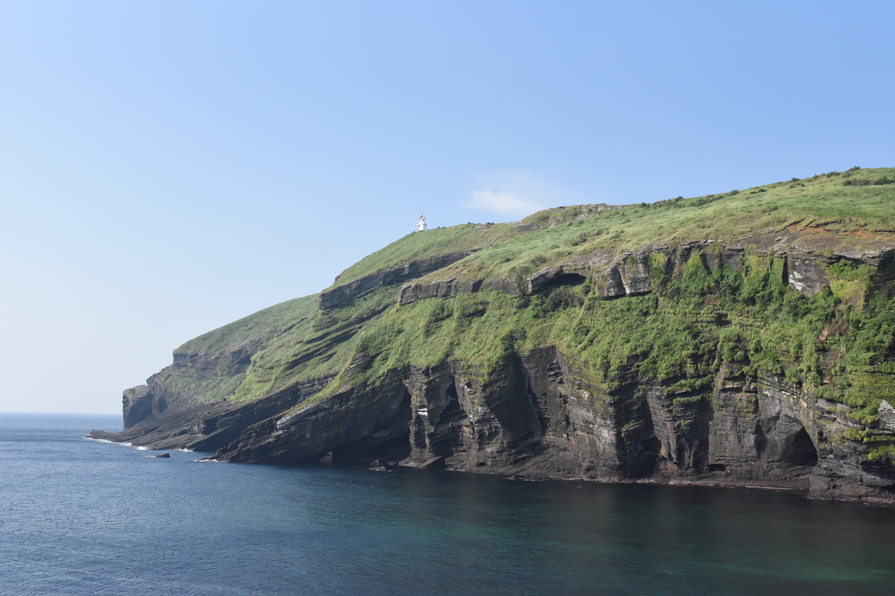
September 8, 2016 | This photo was taken on U-do, a small island off the coast of Jeju-do, which is itself an island dubbed the Hawaii of Korea. I really loved all the nature in Jeju-do. It was a fresh, calm, and relaxing break from the bustle and noise of Seoul. While there wasn't a single other tourist in sight at the time of this photo, within a short hour or two, the tiny island was overrun by a truly ridiculous number of tourists packed onto large tour buses. We were very thankful to the host of our hostel for advising us to catch the first ferry out to U-do.
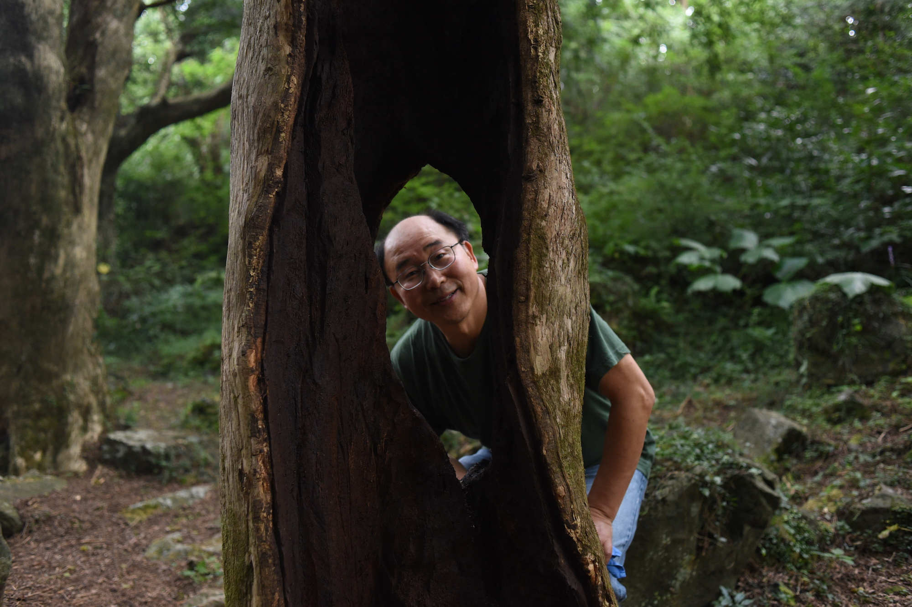
September 9, 2016 | I really love this peek of my dad through a hole in a hollowed out tree. We were at Bijarim Nutmeg Forest in Jeju-do. The forest supposedly has healing and immune system-boosting properties from substances emited by the trees. The walk was very shady and peaceful. It certainly felt quite healing and relaxing.
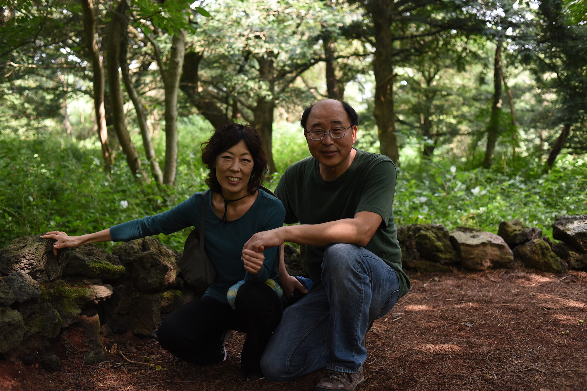
September 9, 2016 | My final pick of the year was from the same Nutmeg Forest. I really liked this photo of my parents. I thought it would make a lovely choice for something like those ubiquitous Christmas greeting cards. I think I could have done a better job with the amount of light captured, but I'm happy with the picture because of the subjects and the atmosphere.